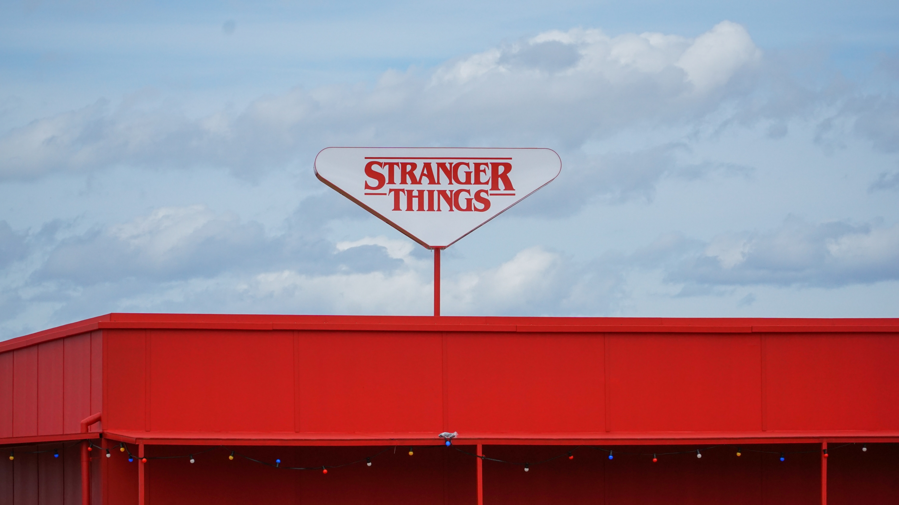

Turn around, look at what you see In her face, the mirror of your dream Make believe, I'm everywhere Given in the light Written on the pages is The answer to our never ending story, ah Reach the starts, fly a fantasy Dream a dream, and what you see, will be Rhymes that keep their secrets will Unfold behind the clouds And there upon a rainbow is The answer to our never ending story, ah Story, ah
You just saved the world Gosh, I miss you Dusty Bun I miss you more, Suzie Poo I miss you more, multiplied by all the start in our galaxy No, I miss you- Enough
 Photo by Rafal Werczynski on Unsplash